Coding projects from RUCKUS SEs
-

R1 Dash Master
By Alek Murray
Build importable Data Studio dashboards for RUCKUS One and RUCKUS AI from a simple declarative spec via MCP server.
November 2026 -
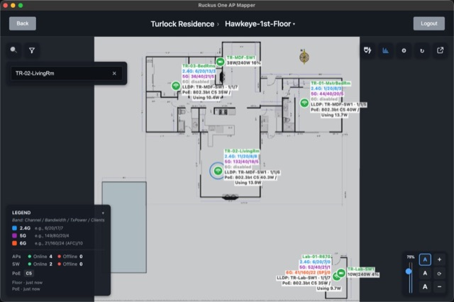
RUCKUS One Device Mapper
By Mike Rieben
Desktop app for viewing RUCKUS One access points and switches on venue floor plans, with RF details (channel, bandwidth, transmit power)…
November 2026 -
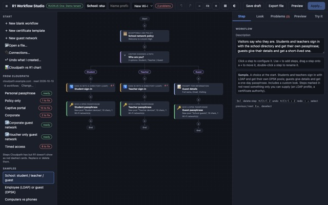
R1 Workflow Studio
By Terry Henry
Design RUCKUS One enrollment workflows visually, or read them out of Cloudpath and convert them. A desktop app for macOS and Windows.
November 2026 -
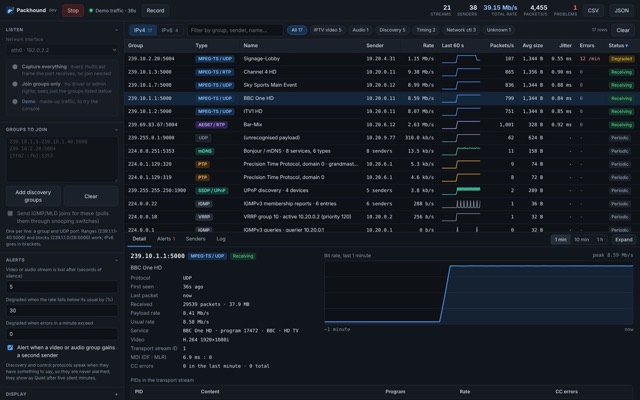
Packhound
By Andrea Coppini
Sniffs out every multicast stream arriving at a network port and tells you what it is, how fast it runs, who is sending it and whether it…
November 2026 -
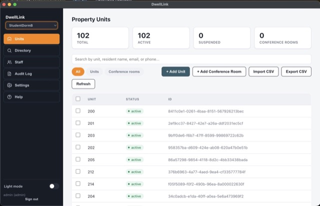
DwellLink
By Terry Henry
Resident Connectivity Management, powered by RUCKUS One. A desktop app for front desk staff and property managers to create and manage…
November 2026 -
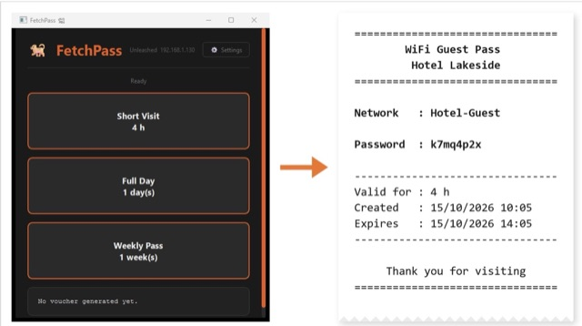
FetchPass
By Frederic Muffat-Es-Jacques
Guest Wi-Fi voucher generator for Ruckus Unleashed, Ruckus One and SmartZone.
November 2026 -
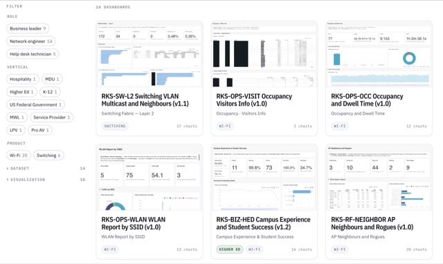
Dashboard Gallery
By John Murphy · PSE
Network dashboards built from real production telemetry, published with redacted screenshots and scrubbed export bundles you can download.
November 2026 -
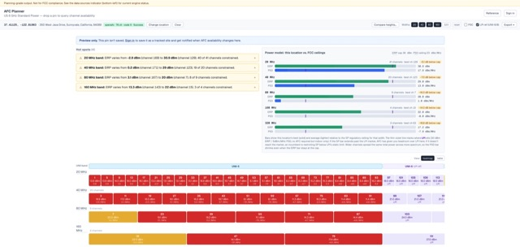
AFC Planner
By Chris Ross · Service Provider
6Ghz standard power operations and planning previously unavailable in an easy and/or free format.
November 2026 -
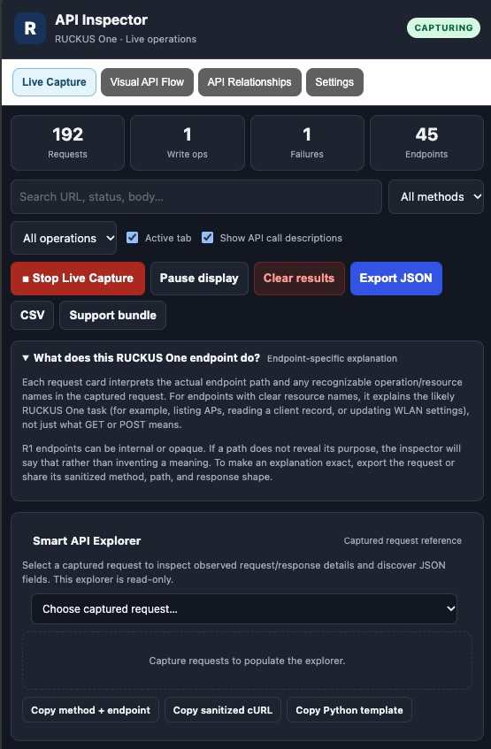
RUCKUS One API Inspector
By Terry Henry
A browser extension for observing and visualizing API requests made by the RUCKUS One web interface.
November 2026 -
Your imagination is your limitation · Wi-Co Texas
By Kevin Franzen
Your imagination is your limitation. A practical AI session for wireless engineers, by Kevin Franzen at Wi-Co Texas 2026.
November 2026 -
U
UPDATE: Crossbreeder Plus v1.0.11 - With R1 support!
By Andrea Coppini
November 2026 -
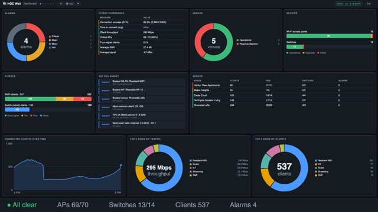
R1 NOC Wall
By Terry Henry
A server-side NOC wall display for RUCKUS One — for a single site or a whole managed-service business.
October 2026 -
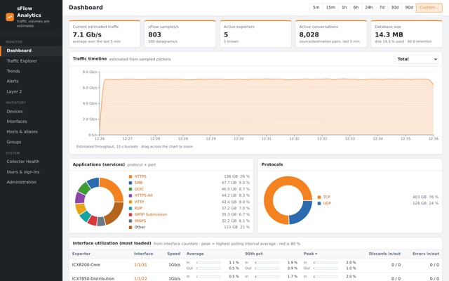
sFlow Analytics
By Frederic Muffat-Es-Jacques
Self-hosted sFlow collector and traffic analytics for RUCKUS ICX switches (and any sFlow v5 device).
October 2026 -
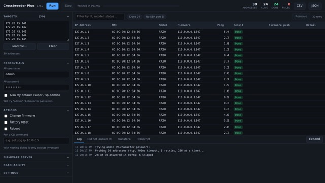
Crossbreeder Plus
By Andrea Coppini
Bulk firmware changes, inventory and CLI work across standalone Ruckus access points — many at a time instead of one after another.
October 2026 -
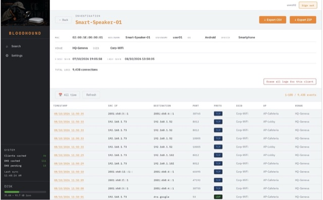
Bloodhound
By Frederic Muffat-Es-Jacques
WiFi network investigation platform for Ruckus infrastructure. Bloodhound ingests and enriches syslog/flow logs from Ruckus WiFi…
October 2026 -
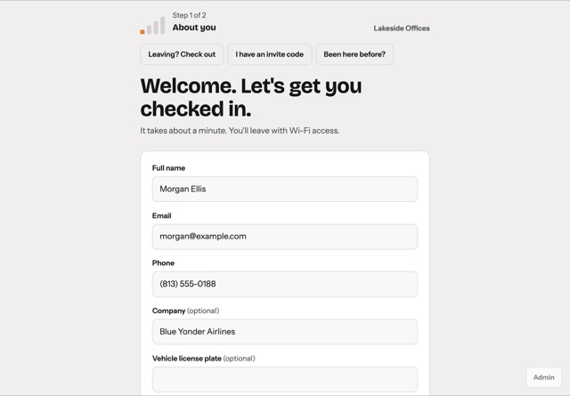
Visitor Desk
By Terry Henry
Visitor check-in and Wi-Fi for RUCKUS One, as a ready-to-run virtual appliance for VMware ESXi and vSphere.
October 2026
No projects match that search.